Знакомьтесь, это Google Chrome
Самый передовой на сегодняшний день веб-браузер

Chrome Dev Tools
Лучший инструмент для отладки кода


Установка Sublime Text и Package Control
После установки Sublime Text 2, скопируйте код для установки Package Control. Нажмите Ctrl + ` или зайдите во View > Show Console для вызова консоли Sublime Text.
Первый HTML документ
Создайте на рабочем столе новую папку и назовите её Source,
в ней создайте новую папку и назовите её MCS1.
Откройте Sublime Text, создайте файл и напишите в нём Hello World. Сохраните файл в папку MCS1 под названием index.html
Немножко истории
1990, CERN, Швейцария
Тим Бернерс-Ли выложил в сеть первый браузер WorldWideWeb, сервер,
а также сайт, где он описал использование HTML 1.0
Краткая история браузеров
| 1991 | Тим доработал WorldWideWeb и выложил его исходный код в сеть (позже был переименован в Nexus, что бы не путать браузер со всемирной сетью). |
| 1992 | Появляются новые браузеры MidasWWW, Erwise и ViolaWWW. Начинается работа над NCSA Mosaic (или просто Mosaic). Выходит Lynx — текстовой браузер, который до сих работает, развивается и обновляется. |


| 1993 | Выходит браузер Mosaic. |
| 1994 | Выходит Web Explorer от IBM. Тим Бернерс-Ли создаёт World Wide Web Consortium (W3C). Начиначется работа над браузером Opera. Выходит браузер Netscape Navigator. |


| 1995 | Выходит Microsoft Internet Explorer. |

| 1996 | Выходит браузер Opera под Microsoft Windows. Netscape Navigator на пике своей популярности. Выходит Internet Explorer под Mac OS X. |
| 1997 | Прекращается разработка и поддержка Mosaic. Начало разработки браузерного движка Gecko. IE 4 выходит на новом движке Trident. |
| 1998 | Начинается работа над браузером Opera под мобильные устройства. Зарождается браузерный движок WebKit (KDE's HTML layout engine (KHTML), KDE's JavaScript engine (KJS)). Создан проект Mozilla. |
| 1999 | Начало бума доткомов. Инвесторы вкладывают огромные деньги в онлайн стартапы. |
| 2000 | Выходит кросплатформенный браузер Opera 4.0. Opera Mobile 3.6 впервые начинает использоваться на телефонах. IE навсегда покидает Mac. |
| 2001 | Начата работа над WebKit отдельно от KHTML и KJS. Окончание бума доткомов, большинство стартапов растратили вложенные инвестиции, так и не окупившись. |
| 2002 | Анонсирован JavaScriptCore (компонет WebKit). Зарождение эры Web 2.0. Вышла первая версия браузера Mozilla на базе Gecko. Началась работа над браузером известным сегодня как Firefox (сначала он назывался Phoenix, потом Firebird, позже Mozilla Firefox). |
| 2003 | Apple Safari и WebCore (компонент WebKit) был представлен Стивом Джобсом на конференции Macworld Expo. Opera Mobile 6.0 начинает поддерживать Windows Mobile. |
| 2004 | Начинается работа над Opera Mini. Выходит первая версия Mozilla Firefox на базе Gecko. |

| 2005 | WebKit становится общедоступным (open-source), добавлена поддержка векторной графики в формате (SVG). |
| 2006 | Выходит Opera для Nintendo DS и Nintendo Wii (браузер назывался Internet Channel). Opera Mobile начинает поддерживать SVG. |


| 2007 | Стив Джобс показал миру первый iPhone, который поставлялся с Mobile Safari. Позже в этом же году выходит Safari под Windows. После лимитированного распространения в Европе релизится Opera Mini. |
| 2008 | Выходит Google Chrome, а так же open-source браузер Chromium. Оба на основе WebKit. |
| 2010 | Выходит Firefox Mobile. Анонсирован WebKit2. |
| 2012 | Выходит Chrome под Android и iOS. Выходит Яндекс Браузер на основе Chromium. |

| 2013 | Анонсирован браузерный движок Blink на который в этом же году перешли Google Chrome, Chromium, Opera и все остальные браузеры использующие в своей основе Chromium. Выходит мобильная версия Яндекс Браузера под Android и iOS. |
Современный WEB
Растровая 2D и 3D графика
HTML5 элемент canvas позволяет создавать растровые 2D изображения. Дополнительные библиотеки (например three.js)
позволяют работать с 3D моделями.

 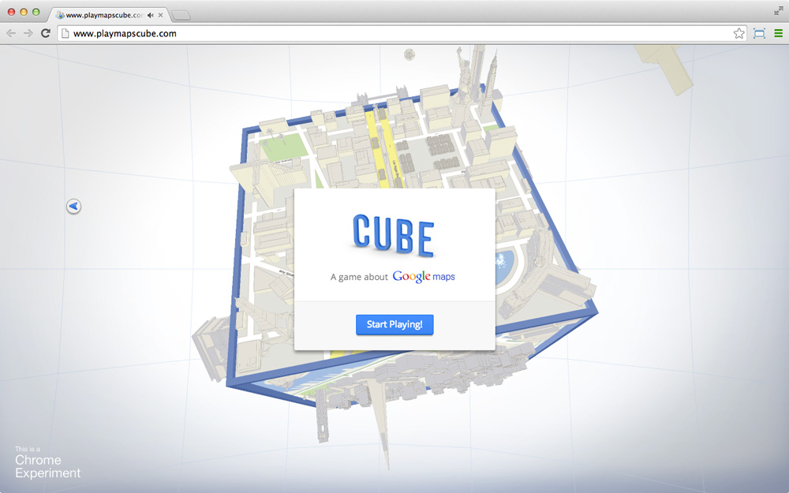
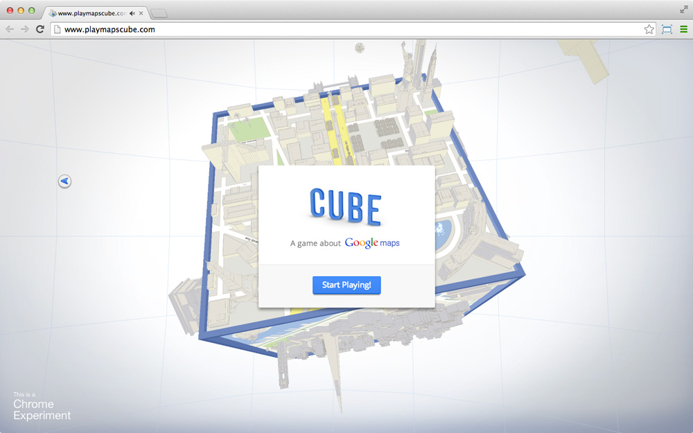
Векторная 2D графика
Возможно вставлять и управлять SVG файлами.
SVG — Scalable Vector Graphics
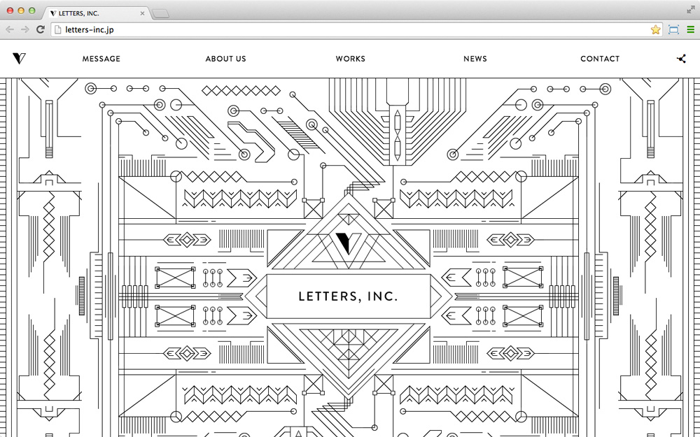Аудио и видео
Управляемое проигрывание аудио и видео позволяет создавать удивительные презентации продуктов.
 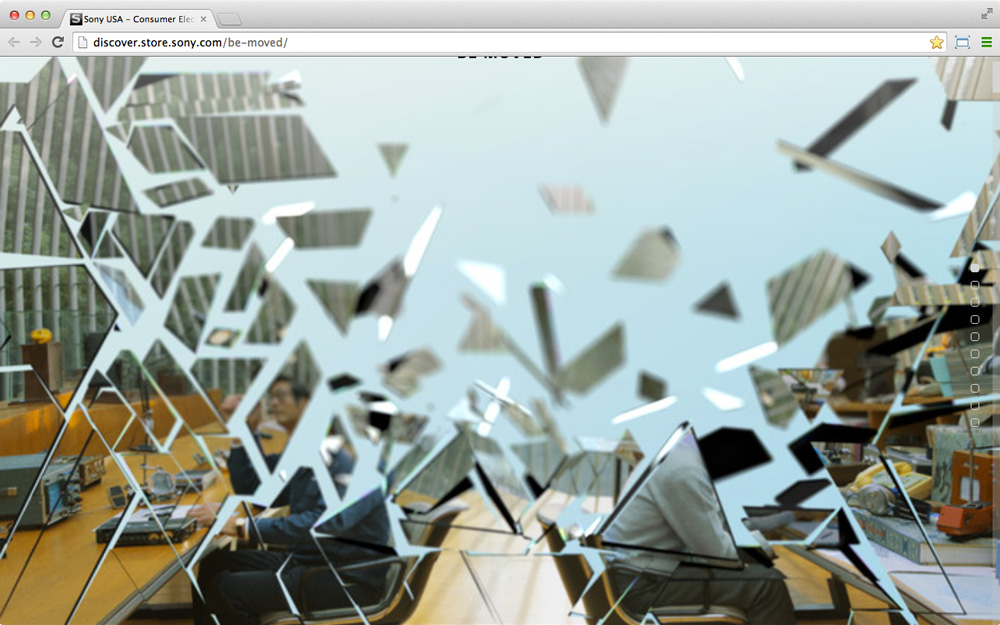
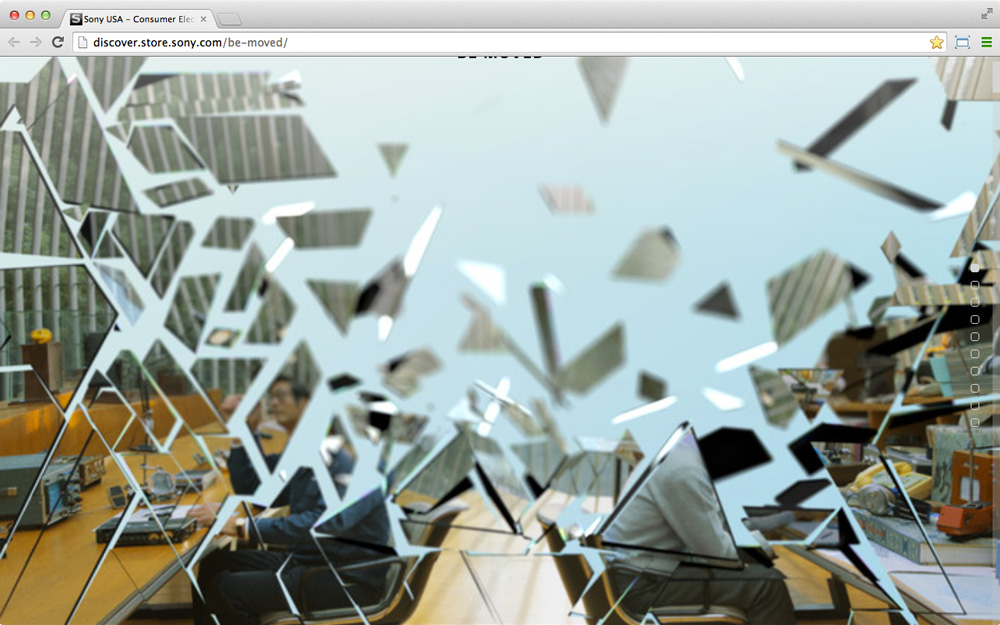
Параллакс
Изменение видимого положения объекта относительно удалённого фона в зависимости от положения наблюдателя. Используется во множестве современных сайтов для создания эффекта глубины картинки.

One Page Scroll
Повсеместно используется в продуктовом вебе.


Интуитивный интерфейс
Конкурентная среда создаёт условия для борьбы за внимание пользователя. Это обязывает сайты быть простыми,
понятными и удобными.

Web Fonts
Возможность подгружать шрифты.
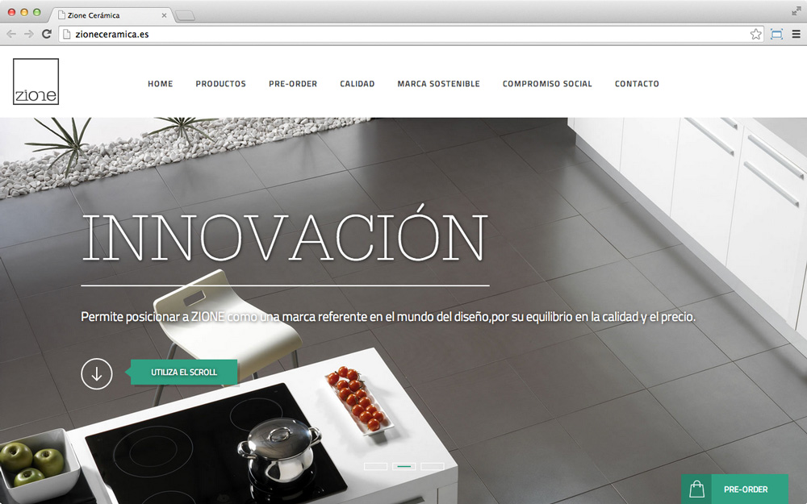Инфографика
Информация может быть наглядной.
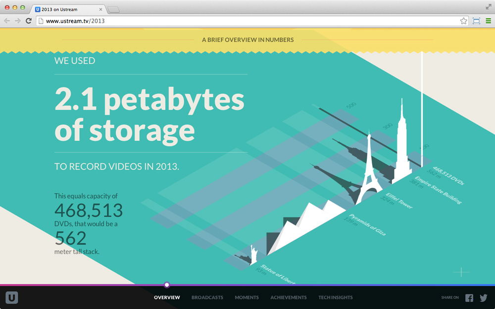Асинхронная работа с данными
Возможность обновлять отдельные участки сайта, подгружать необходимые файлы и делать многое другое без перезагрузки страницы.
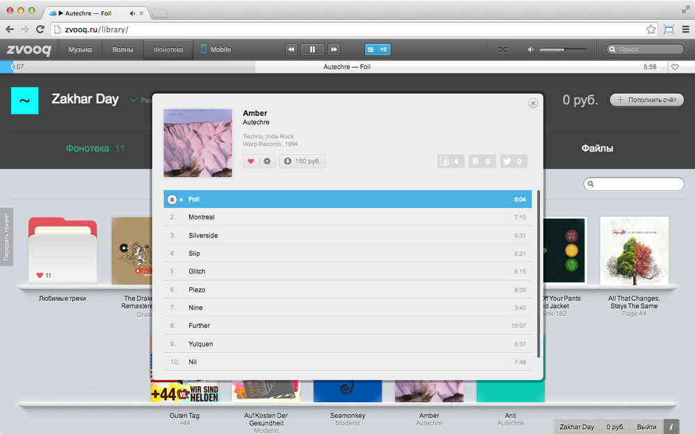 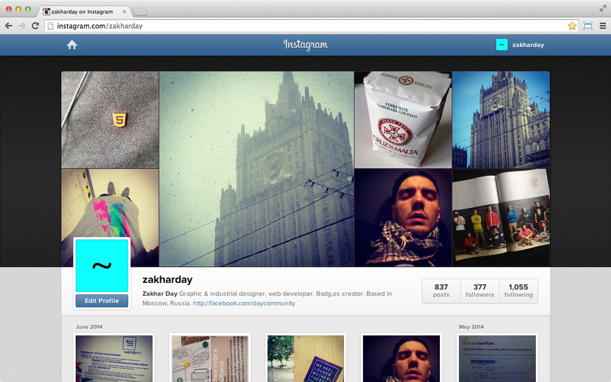Web Socket
Протокол полнодуплексной связи, предназначенный для обмена сообщениями между браузером и сервером в режиме реального времени.

Веб-приложения
Многие сайты уже совсем не сайты.
 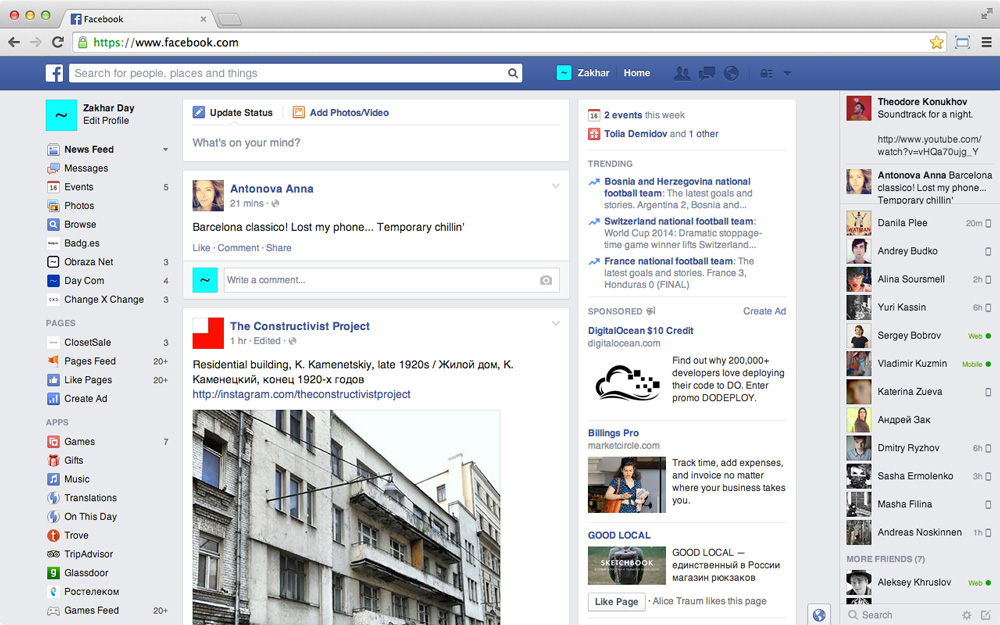
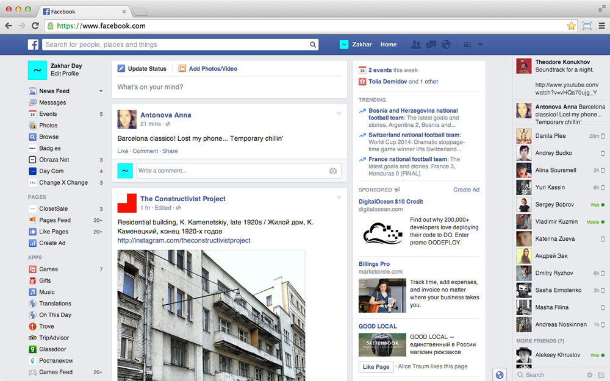
Эффекты
Скругление углов, тени, градиенты, прозрачность, геометрические трансформации, управление временем и многое другое.
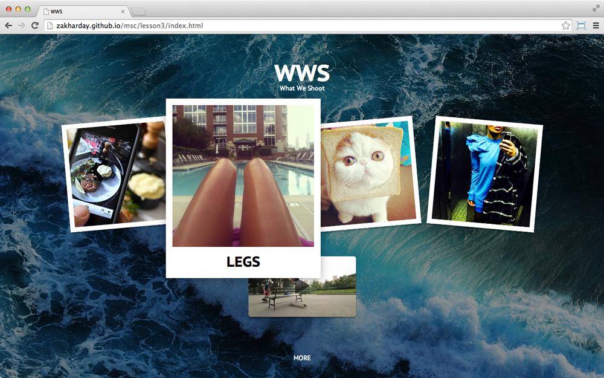Адаптивный дизайн
Возможность определять размер окна браузера и
применять необходимые правила отображения.

Немножко терминов
Hypertext
Текст, который может быть нелинейным и
содержать ссылки на другие тексты.
Термин впервые упомянут Тедом Нэльсоном в 1965 году
Hyperlink
Ссылка на другую часть документа документа или на другой документ.
Hypermedia
Термин, используемый для обозначения гипертекста, который может содержать в себе ещё и графику (картинки), звуковые файлы, видео, и прочие современные штучки.
HTML
HyperText Markup Language
Язык гипертекстовой разметки, описывает структуру документа
HTTP
HyperText Transfer Protocol
Протокол передачи гипертекста
HTTPS
HyperText Transfer Protocol Secure
Расширение протокола HTTP, поддерживающее шифрование
HTML Tag
<html>
Тэг – это метка, специальный синтаксис определяющий начало или конец HTML элемента. Они могут содержать внутри текст и другие тэги, а те в свою очередь другие тэги, таким образом создавая древовидную структуру документа DOM. Тэг состоит из названия элемента, заключённого в угловые скобки. Когда браузер видит тэг он преобразует его в элемент (или объект) DOM.
<html>Контент</html>
Есть открывающие и закрывающие тэги. Для обозначения закрывающего тэга используется знак слэш перед названием элемента.
<img src="imgs/05-wireframes.gif">
Некоторые тэги не требуют закрывающего тега, внутри таких тэгов, соответственно, не может быть других тэгов. Тэги могут содержать атрибуты, описывающие свойства элемента. Атрибуты указываются внутри открывающего тэга через пробел от названия тэга. Большинство аттрибутов имеют значение, которое задается при помощи знака равно «=» и кавычек «""», внутри которых оно указывается.

Добавим несколько тегов
Для быстрого написания открывающего и закрывающего тегов
напишите название тега и нажмите Tab.
В некоторых случаях можно удобно раздвинуть курсор на несколько строк используя сочетания Ctrl + Shift + ↑ и Ctrl + Shift + ↓. Дополнительный курсор можно вставить в любое место зажав Cmd.
Encoding
Кодировка или как браузер понимает документ.
Если мы хотим общаться правильно, нам надо сказать браузеру
на каком "языке" мы с ним будем говорить.
Замените любой текст в нашем документе на русский и проверьте в браузере как он выглядит.

Необходимо указать кодировку в который мы будем передавать данные. Основным стандартом на сегодняшний день является UTF-8 или Unicode.
DOM
Document Object Model
Объектная модель документа,
создаётся после считывания структуры документа.

Организуем правильный DOM
Для развёртывания базовой HTML структуры введите восклицательный знак и нажмите Tab.
В тег title пишется заголовок, который будет отображаться в окне браузера и в поисковике. Замените на что-то более релевантное нашей странице, например Hello World.
Теперь перенесите заголовки и параграф текста внутрь тега body.
Для управления уровнем вложенности тега используйте сочетания
Cmd + [ и Cmd + ].
В редакторах кода предусмотрены различные цветовые схемы. Что бы код у нас с вами выглядел одинакого переключите цветовую схему
Preferences > Color Scheme > Twilight.
Что обозначает весь этот код?
Структура документа
Документ всегда навинается с декларации типа документа !DOCTYPE html.
В «корне» нашего «дерева» находится элемент html, его «детьми» явлются элементы head и body.
У элементов head и body есть «дети». Элементы meta и title являются детьми head. У элемента meta есть аттрибут charset значение которого utf-8. Элементы h1 h2 h3 h4 h5 h6 и p являются детьми body.
Наличие иерархии является важным качеством кода HTML — мы можем выстроить наши элементы в виде дерева.
Для описания иерархии используются слова parent (родитель) и child (ребенок).
Элементы являющиеся детьми одного элемента называют siblings (сестринскими).
Стандартный набор элементов,
которые должен содержать HTML документ
<!DOCTYPE html> |
Строчка, которая декларирует тип документа. Она сообщает браузеру, что он работает с документом HTML. Без этой строчки, некоторые браузеры могут некорректно отоброжать полученный документ. |
<html></html> |
Корень документа. Родитель всех остальных элементов. |
<head></head> |
Заголовок документа. Элемент содержащий метаданные о странице. Метаданные — это информация, которая говорит машине что это за документ и как с ним работать. Такими данными например могут быть заголовок документа, который потом отображается в гугле, используемая кодировка, ссылка на картинку которую отобразит фейсбук, если запостить эту страницу. |
<body></body> |
Тело документа. Элемент содержащий данные которые нужно отображать. |
Описание документа
<meta charset="utf-8"> |
Мета тэг описывающий страницу, в данном случае этот тэг сообщает браузеру, что текст в нем представлен в кодировке UTF-8 (unicode). Рекомендуется всегда использовать именно такую кодировку. Декларация кодировки (мета тег описывающий кодировку) должна быть первым элементом внутри элемента head. |
<title>Hello World</title> |
Заголовок страницы, который виден в табе браузера и в поисковике. |
<h1>Hello World</h1><h2>Hello World</h2><h3>Hello World</h3><h4>Hello World</h4><h5>Hello World</h5><h6>Hello World</h6>
|
Мы разметили несколько строк “Hello World” обозначив их как заголовки (heading) разного уровня. |
<p>Здравствуй мир</p> |
Строка обозначена как параграф текста. |
CSS
Cascading Style Sheets
Каскадные таблицы стилей, описывают визуальное представление документа

Добавим несколько стилей
DIV и SPAN
Базовые тэги организации контента
В спецификации HTML описано огромное кол-во тегов. Практически каждый тег имеет свою семантику, но также есть более непосредственные теги для огранизации контента, такие как div и span.
Форматирование
Существуют общепринятые правила форматирования кода. Следование этим правилам сделает ваш код более читаемым и простым для понимания.
Как мы уже сказали, HTML код предствляет иерархию, поэтому правила форматирования HTML помогают увидеть эту иерархию
работающему с кодом человеку.
Whitespace (пробел), tab (символ табуляции), endspace (перенос строки), они помогают кодерам удобно оформлять и читать текст.
Управлять отступами можно через меню, находящееся в нижнем правом углу.


Правильное форматирование кода позволяет избежать ошибок, таких как незакрытые тэги или кавычки аттрибутов или неправильного отношения элементов, к тому же Sublime Text покажет вам цветовым выделением всё ли правильно.
В зависимости от команды в которой вы будете работать или от вашего личного предпочтения для отступов используется либо знак tab, либо несколько пробелов, обычно от двух до четырех. Для контроля ширины отступов у всех нормальных текстовых редакторов есть специальная настройка.
Небольшой набор правил для авторства HTML документов
Открытые тэги элементов, у которых может быть содержимое, необходимо закрывать.
Окрытые кавычки для значений аттрибутов должны быть закрыты.
За исключением текста внутри элементов, уровень иерархии отображается при помощи отступов.

Комментарии
Комментарии — это пометки внутри кода,
которые не влияют на его отображение.
Это что-то вроде сообщения читающему код человеку — себе или кому-то другому. Они могут также использоваться для визуального разделения кода документа на части и для того, чтобы временно спрятать какую-то часть кода.
В разных типах документов коминтарии обозначаются по разному,
но эти обозначения не обязательно помнить, используйте Cmd + /
для комментирования и раскомментирования кода.
Zen Coding
Мы уже показали вам несколько фишек дзен кодинга, такие как раздвигание курсора на несколько строк и раскрывание базовой структуры HTML документа. История этого термина берёт свое начало из 2008 года, тогда Вадим Макеев впервые представил инструмент для быстрого генерирования кода Zen Coding. Годом позже один из преподавателей Moscow Coding School — Сергей Чикуенок, на тот момент работавший в студии Артемия Лебедева, присоединился к проекту и стал его самым значимым контрибьютером.
На сегодняшний день многие концепции Zen Coding инкорпорированы в современные редакторы кода, а его код является общедоступным. Проект переименован в Emmet.
Установка Emmet
Для установки дополнительных плагинов в Sublime Text входим в командную сроку нажатием Cmd + Shift + P и находим
Package Control: Install Package.
То же самое можно сделать выбрав из меню
Preferences -> Package Control.
Наните вводить название необходимого плагина и он появится в выдаче поиска. После выбора плагина нажмите Enter.

Приступим к дзен кодингу
Главное правило для работы всех подсказок Emmet и Sublime — необходимость сохранить файл в нужном расширении,
то есть для нашего случая это будет .html.
Попробуем создать небольшое меню. Наберите div#header>ul#nav>li*4 и нажмите Tab.
Emmet автоматически создаст нам нужную разметку и задаст указанные атрибуты class и id
2) Попробуем выделить нашу конструкцию и нажмем сочетание
Ctrl + W (Shift+Ctrl+G для PC)
внизу редактора откроется консоль и попросит нас ввести тег которым мы хотим обернуть данный элемент, вводим 'html>body' и у нас уже готов базовый mark-up нашей страницы.
Также мы можем просто написать в столбец
1
2
3
4
и выделив снова вызвать консоль оборачивания после чего указать тег списка внутри которого будут находиться элементы списка 'ul>li*' где звездочка в данном случае укажет что для каждой строки нужно задать свой отдельный элемент и Emmet выполнит нашу просьбу
3) Также Emmet позволяет нам двигаться внутри документа более быстро с зажатой клавишей alt
4) Это лишь малая доля того как Emmet поможет вам сохранить наше с вами время при написании кода что крайне важно ведь в сутках всего 24 часа а идей для приложений и веб-сайтов всегда будет на много лет вперед.
Для ознакомления с полным функционалом Emmet советую вам сходить на
страницу Github Сергея Чикуенка
Практика
Давайте попробуем поупражняться в написании кода
Сейчас мы закодим свой вариант википедии
Откройте, пожалуйста, страницу Рика Роса.
Создайте папку wikipedia внутри нашей папки MCS1.
Создайте новый файл в текстовом редакторе (File – New File) и сохраните его в папку wikipedia с именем rick-ross.html Пробелы не являются разрешенными символами для адресов страниц, поэтому мы заменяем пробелы на знак «минус». Кроме того, для адресов страниц принято использовать латинские буквы в нижнем регистре.
Новые элементы
Разберемся что каждый из них означает
<section></section> |
Этот элемент используется для выделения смыслового фрагмента документа, к этому же классу элементов относятся еще header и aside. Является одной из новых фич HTML5. |
<strong></strong> |
Этот элемент используется для выделения слова или части текста как более важного по смыслу, по умолчанию браузер выделит такой текст жирным |
<ul></ul> |
Unordered list – несортированный список — элемент использующийся для обозначения списков. Интересным свойством является то, что этот элемент должен всегда сопровождаться хотя бы один «ребенком», элементом списка |
<li></li> |
List item – элемент списка |
<a></a> |
Anchor – королева всех элементов, ссылка. У ссылки есть необходимый аттрибут — href (hypertext reference) — который указывает куда именно ведет ссылка. В нашем примере мы использовали идентификатор фрагмента документа в качестве адреса ссылки. То есть при навигации по этой ссылке браузер должен перейте к обозначенному фрагменту. |
Фрагменты и ссылки
Обратите внимание на аттрибуты секций и ссылок.
Аттрибут id добавляет элементу уникальный идентификатор, т.е. при помощи этого аттрибута браузер знает к какому фрагменту нужно перейти при навигации по соответствующей ссылке.
Ссылки
Мы сделали так, чтобы браузер перешел к определенному фрагменту нашей страницы. Но главное качество гипертекста —
это ссылки между разными документами.
В биографии Рика Росса есть ссылка на лейбл Maybach Music Group. Создайте новый файл в папке wikipedia с именем maybach-music-group.html
Разверните в нём базовую структуру HTML, смените заголовок на название лейбла, как в предидущей страничке создайте заголовок и параграф текста. Создайте ещё один параграф и создайте в нём реферальную ссылку как показано ниже.
Закройте все окна Sublime Text, в меню выберите Open и в появившемся окне найдите нашу папку wikipedia. Выберите её и нажмите на кнопку Open.
Мы открыли созданные документы в виде проекта. Панель слева позваляет быстро перемещаться между файлами проекта и видет дерево проекта.
Теперь давайте вернемся к первому файлу и поставим в нем ссылку на нашу новую страницу. Выберите файл rick-ross.html, найдите в первом параграфе название лейбла на который мы собираемся сослаться, выделите его и нажмите Ctrl + W для того, что бы обернуть текст необходимым нам тегом. В появившемся снизу поле впишите a и нажмите Enter.
Осталось в свойство атрибута href вписать название документа на который мы ссылаемся, а именно maybach-music-group.html
Сохраните внесённые изменения, обновите первую страницу и попробуйте проследовать по ссылкам в обоих документах.
Класс! Мы почти закодили википедию!
Картинки
В Википедии довольно часто встречаются картинки,
давайте добавим какое-нибудь изображение на нашу страницу.
Для вставки изображений используется тэг <img>. Но просто тэга недостаточно, нам нужно уточнить что именно за изображение мы хотим показать. Для этого используется атрибут src. Его значением будет путь к изображению. Понятие «путь», path по-английски, используется постоянно и является одним из важных для понимания терминов.
Path — строка текста, содержащая адрес к какому-то ресурсу. Это может быть другой HTML документ, картинка или медиа-объект, вроде аудио или видео. Пока будет проще всего думать о путях как об адресах файлов на файловой системе компьютера, но относительно других файлов.
Вот примеры относительных путей:
rick-ross.html |
Путь к файлу rick-ross.html находящийся в той же папке что и ресурс, который ссылается на этот файл. |
../index.html |
Путь к файлу index.html находящийся в родительской папке, один шаг «вверх» в файловой структуре. |
../../typography.css |
Путь к стилю typography.css на два уровня выше в файловой структуре. |
images/header/logo.png |
Путь к изображению logo.png на два уровня «ниже» в файловой структуре, в папке header, в папке images, которая находится в одной папке с файлом, который ссылается на это изображение. |
В папке wikipedia создайте папку images, откройте картинку по ссылке и сохраните ее, в только что созданную папку images под именемrick-ross.jpg.
Давайте добавим новый блок на нашу страницу сразу после первой секции с параграфом текста.
aside |
Тэг, обозначающий контент находящийся в стороне. Как бы не обязательный, а дополнительный контент. Этим тэгом удобно размечать сайдбары. |
figure |
Тэг, обозначающий, что внутри будет картинка или какая-то графика, с каким-то значением. |
figcaption |
Подпись для figure. |
Стили
Есть несколько способов стилизации HTML документов.
Давайте рассмотрим некоторые из них.
Элемент style
Давайте откроем код нашей страницы и добавим новый элемент style внутри элемента head и добавим следуюший CSS код.

Разберем написанное по строчке
<style></style> |
Это элемент, предназначенный для описания стилей. Стилевые правила, которые будут применены к элементам страницы описаны внутри этого элемента при помощи специального синтаксиса. Этот элемент обычно является ребенком элемента head. |
aside { float: right; } |
Здесь aside — это селектор (selector), который, как следует из названия, выбирает элементы к которым будет применены стилевые правила. Фигурные кавычки именуются блоком (declaration block), в них описываются правила. float: right; прижмёт элемент к правому краю браузера и позволит тексту обтекать его слева. |
aside img { width: 300px; height: 300px; } |
Здесь мы обращаемся к элементу img внутри элемента aside и задаём его ширину и высоту в пикселях. |
Стили в отдельном файле
Принято использовать отдельный файл, для определния стилей. Это удобно тем, что можно подключать один и тот же файл стилей к разным страницам, что в случае с многостраничными сайтами, которые часто имеют общий шаблон страниц, помогает не дублировать код.
Кроме того, разделение ответственности (separation of concerns) при написании кода помогает в простоте поддержки проекта. Изменение стилей страницы (CSS) не должно быть причиной изменения стуктуры и информации страницы (HTML).
Создайте новый файл и сохраните его в папке проекта с именем style.css (обратите внимание на расширение .css)
В этот файл скопируйте код из тэга style, который мы написали до этого.

На странице rick-ross.html вместо элемента style и всех стилей внутри него добавьте link тэг для подключения стилей.

К одному документу HTML можно подключать несколько стилей, кроме того, подключать можно файлы стилей хранящиеся на других серверах, что позволяет использовать библиотеки с предопределенными стилями или писать такие библиотеки самим.
Синтаксис CSS
У CSS довольно простой синтаксис. Сначала указывается селектор, а после него блок, в котором объявляются правила в виде ключей и значений.

Селектор, расположенный в левой части правила, определяет, на какие части документа распространяется правило.
Блок объявлений располагается в правой части правила. Он помещается в фигурные скобки, и, в свою очередь, состоит из одного или более объявлений, разделённых знаком ;. Каждое объявление представляет собой сочетание свойства CSS и значения, разделённых знаком :. Селекторы могут группироваться при помощи запятых. В таком случае описанные стили применяются к элементам, выбранным этими селекторами.
Стили по-умолчанию
Когда мы до этого работали над нашей страницей, текст, который мы разметили разными тэгами отображался по-разному — то есть несмотря на то, что мы не подключали к странице никаких стилей, разные элементы были оформлены по-разному.
Заголовок жирный и большой, элементы списков выделены горизонтальными отступами и маркерами списка, ссылки синего цвета и подчеркнуты. Всё это стили которые браузеры применяют по умолчанию к разным элементам.
Наличие стилей по-умолчанию позволяет отображать документы к которым не подключены никакие стили так, чтобы пользователю было ясно где заголовок, а где список. Однако, в случае когда вы контролируете стили своей страницы, стили по-умолчанию могут мешать оформить страницу так, как хочется.
Самой главной помехой обычно являются отступы, поэтому давайте пока отключим разные отступы определенные браузером.
Перепишите следующий код в файл стилей и вставьте так, чтобы это были первые строчки файла стилей.

Вот так должен выглядеть CSS файл.
Селекторы
Бывают разные типы селекторов, в зависимости от того, к каким элементам они будут применены
h1 {...} |
Селекторы, которые применяются ко всем элементам определенного типа |
* {...} |
Универсальный селектор (он выделяет все элементы) |
section p {...} |
Селекторы, применяющиеся к элементам, в зависимости от их положения в дереве элементов |
Свойства
Пoсмотрим на несколько свойств и их возможных значений
color: red; |
Определяет цвет текста. Есть несколько способов обозначения цветов: английским названием цвета, как в примере (red, green, yellow etc.) при помощи схемы RGB, где цвет выражен смешанными каналами красного, зеленого и голубого. Интенсивность цвета определенного канал выражена значениями от 0 до 255. (rgb(255, 0, 0), rgb(0, 255, 0)…) при помощи HEX-кода, который на самом деле является тем же RGB, но числовые значения записаны в шестнадцатиричной системе (отсюда название, hexadecimal) и перед значением стоит знак # (#ff0000, #00FF00…) при помощи схемы HSL — на самом деле это один из самых классных способов определения цвета, об этом подробнее можно почитать тут. (hsl(0, 100%, 50%), hsl(120, 100%, 50%)…) |
background-color: yellow; |
Определяет цвет бэкграунда элемента |
font-family: Helvetica, Arial, sans-serif; |
Определеяет набор шрифтов для отображения текста элемента. Например, font-family: Helvetica, Arial, sans-serif. Эта запись означает, что если у пользователя установлен шрифт Helvetica (как на всех маках, айфонах, айпэдах и т.д.), то текст будет отображен в этом шрифте, в противном случае будет использован Arial (установлен на всех устройствах с Windows), а если нету ни одного, ни другого, будет использоваться дефолтный системный шрифт без засечек (sans-serif). Еще примеры: font-family: Georgia, Cambria, "Times New Roman", Times, serif; – шрифты с засечками, хорошо подходящие для основной массы текста, font-family: Tahoma, Verdana, Geneva — набор шрифтов без засечек, подходящий для элементов пользовательского интерфейса |
Сила стилей
Сделаем из википедии что-нибудь покрасивее, не меняя кода HTML.
Сохраните еще одну картинку в папку images — rick-boss.jpg
Скопируйте следующий код в файл style.css
Рассмотрим новые свойства
font-size: 20px; |
Определяет размер текста элемента |
line-height: 1.5; |
Определяет высоту строки для текста элемента |
text-align: center; |
Определяет горизонтальное выравнивание элемента |
background: url(images/rick-boss.jpg) |
Определяет изображение для фона элемента |
background-position: bottom center; |
Определяет расположение фона элемента |
background-attachment: fixed; |
Определяет свойства фона элемента при прокрутке |
text-shadow: 0 0 2px black; |
Создает тень для текста элемента. |
width: 65%; |
Определяет ширину элемента |